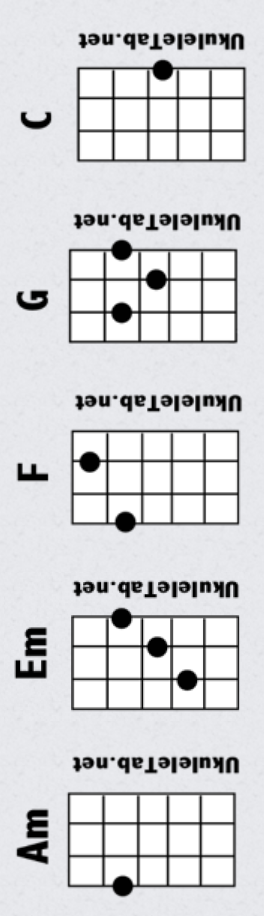

tabs.ultimate-guitar.com/tab/misc-soundtrack/jesus-christ-superstar-ukulele-1256577

HEAVEN ON THEIR MINDS (Judas)
[4/4, Chords played over the - - - - progression/bass riff]
My mind is clearer now at last all to well
I can see where we all soon will be
If you strip away the myth from the man
You will see where we all soon will be
Jesus! You've started to believe the things they say of you
You really do believe this talk of God is true
And all the good you've done will soon get swept away
You've begun to matter more than the things you say
Listen Jesus I don't like what I see
All I ask is that you listen to me
And remember I've been your right-hand man all along
You have set them all on fire
They think they've found the new Messiah
+
And they'll hurt you when they find their wrong
I remember when this whole thing began
No talk of God then we called you a man
And believe me my admiration for you hasn't died
But ev'ry word you say today
Gets twisted 'round some other way
+
And they'll hurt you if they think you've lied
[in 7/8]
Nazareth your famous son should have stayed a great unknown
/
Like his father carving wood he'd have made good
Eb Cm Dm Eb Cm
Dm F G
F G Dm
Dm F G
F G Dm
Dm Em
F G Dm
Dm Em
F G Dm
Dm F
Dm G
Bb C F A
Dm Bb
F
D/A A A Bb Dm7
Dm F
Dm G
Bb C F A
Dm Bb
F
D/A A A Bb Dm7
Bb F Gm Dm
Gm Dm A A Dm
Bb F Gm Dm
FONT −1 +1 CHORDS SIMPLIFY AUTOSCROLL TRANSPOSE −1 +1
Jesus Christ Superstar – Misc Soundtrack ×
1.00
PRO
S M
S M
S M
S M
Vocal
Rhythm Guitar
Solo Guitar
Drums
PLAY THIS TAB
View all instruments
Tables chairs and oaken chests would have suited Jesus best
/
He'd have caused nobody harm -- no one alarm
back to 4/4]
Listen Jesus do you care for your race?
Don't you see we must keep in our place?
We are occupied -- have you forgotten how put down we are?
I am frightened by the crowd
For we are getting much too loud
/ +
And they'll crush us if we go too far
[back to 7/8, instrumental break repeating previous 7/8 bridge]
[back to 4/4]
Listen Jesus to the warning I give
Please remember that I want us to live
But it's sad to see our chances weakening with every hour
All your followers are blind
Too much heaven on their minds
/ +
It was beautiful but now it's sour
Yes it's all gone sour...
----------------
EVERYTHING'S ALRIGHT (Mary, Jesus, Judas)
[in 5/4]
[Mary]
Try not to get worried, try not to turn on to problems that upset you oh
Don't you know everything's alright yes, everything's fine
And we want you to sleep well tonight
Let the world turn without you tonight
If we try we'll get by so forget about all us tonight
Everything's alright, yes, everything's fine
[Judas]
Woman your fine ointment -- brand new and expensive
could have been saved for the poor
Why has it been wasted -- we could have raised maybe
Three hundred silver pieces or more
People who are hungry, people who are starving
Gm Dm A A Dm
Dm F
Dm G
Bb C F A
Dm Bb
F
Dm A A A Bb Dm7
Dm F
Dm G
Bb C F A
Dm Bb
F
Dm A A A Bb
Dm Bbmaj7